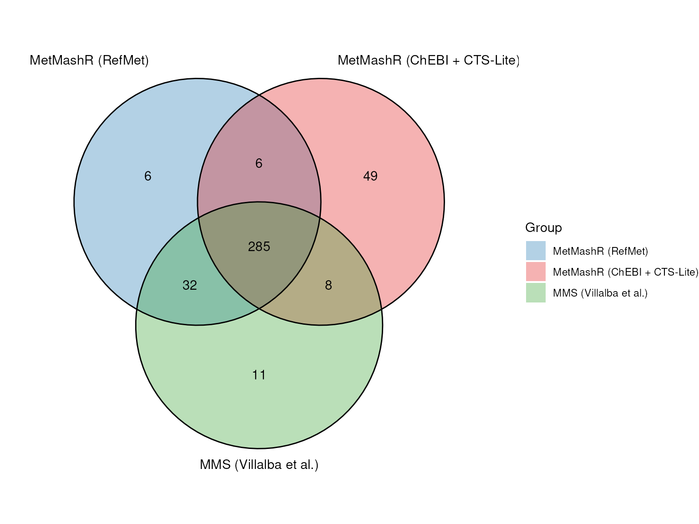

Case study: reimplementing the Metabolites Merging Strategy with MetMashR
Source:vignettes/mms_case_study.Rmd
mms_case_study.RmdIntroduction
Villalba et al. (2023) describe a three-step procedure for harmonising metabolite annotations reported by different studies, databases and publications into one consistent, cross-referenced dataset. The main steps of their “Metabolites Merging Strategy” (MMS) are:
- Translation and merging - convert identifiers from each source (e.g. a name, an InChIKey, or some other identifier) into an InChIKey, and merge records with the same key.
- Attribute retrieval - for each InChIKey, retrieve descriptive attributes (such as name, molecular weight, molecular formula), identifiers for cross-references to other databases (e.g. PubChem CID, SMILES, ChEBI, HMDB, KEGG, LipidMaps, DrugBank, CAS) and chemical ontology (kingdom, superclass, class).
- Manual curation - collapse conjugated acid/base forms of the same compound, retrieve missing attributes, and resolve duplicate/conflicting synonyms.
The worked example included in the original publication harmonises urinary asthma metabolites reported across three Metabolomics Workbench (MWB) studies (ST001039, ST001048, ST001317), the Human Metabolome Database, and six literature articles.
This vignette reimplements the MWB portion of that case study as a single MetMashR model sequence i.e. one workflow object built by chaining MetMashR steps together, and compares the output with the published supplementary results. It adapts the identifier services and automates skeleton-level grouping; it does not reproduce every manual curation decision.
Two variants of the workflow are built from the same steps and compared at the end:
- RefMet variant. Names are translated using PubChem and the Metabolomics Workbench RefMet service, preferring RefMet’s result when available.
- ChEBI + CTS-Lite variant. The input names come from Metabolomics Workbench, and RefMet is also a Metabolomics Workbench service, so the RefMet translation is not fully independent of the data it is translating: any naming convention or curation quirk shared between the two could inflate agreement with the published result. This variant substitutes ChEBI, an independently curated database unaffiliated with MWB, for RefMet. It also adds CTS-Lite (the Fiehn Lab’s successor to the now-closed Chemical Translation Service) as an extra attribute source. CTS-Lite cannot translate names, but it accepts an InChIKey and returns a matched PubChem entry plus literature/patent annotation counts.
For the same reason the ChEBI variant does not query the MWB compound database for cross-references; it uses the ChEBI identifier it already has to retrieve KEGG. Normalisation, the PubChem and ClassyFire attribute lookups and the InChIKey skeleton grouping in Step 3 do not depend on which service supplied the InChIKey, so they are shared by both variants.
Importing the source data
Each study’s reported metabolite list is retrieved directly from
Metabolomics Workbench with mwb_study_source() and the
three tables are combined with combine_sources().
Only the metabolite_name is used as a chemical lookup
input; source and study tags are retained separately. Existing
refmet_name and pubchem_id annotations, where
available, are excluded to test the name-based translation.
# the studies to import
study_ids <- c("ST001039", "ST001048", "ST001317")
# read each source
sources <- lapply(
study_ids,
function(id) read_source(mwb_study_source(source = id, tag = id))
)
# use MetMashR to merge all sources
combine_step <- combine_sources(
source_list = list(),
keep_cols = "metabolite_name",
source_col = "source"
)
# apply the merge
combine_step <- model_apply(combine_step, sources)
# extract the merged table
combined <- predicted(combine_step)
# report number of records
nrow(combined$data)
#> [1] 738Building the model sequence
The remaining lookup and processing steps are chained into a single
model sequence. The translation and attribute-retrieval steps use
pre-existing rds_cache files with
cache_mode = "offline". Cached responses are reused; query
values absent from a cache are left as NA. A live rerun
requires a supported online cache mode and a writable cache location.
These lookup caches do not, by themselves, archive the MWB study
downloads or the separately imported Zenodo comparison file.
# Function that returns an rds_cache by name. Caches for steps shared by both
# variants are keyed by name/InChIKey, not by the service that produced the
# InChIKey. The chebi_name and cts_lite caches are specific to the ChEBI variant.
cached <- function(name, variant = FALSE) {
prefix <- if (variant) "mms_case_study_chebi_variant_" else "mms_case_study_"
rds_cache(source = file.path(
system.file("cached", package = "MetMashR"),
paste0(prefix, name, ".rds")
))
}Normalising synonyms
Molecules have many synonyms and resolving them to the same identifier can be challenging. We apply a small number of normalisation rules, using MetMashR dictionaries, to increase the chance of a match before attempting translation. These are largely dataset-specific heuristics; the original names are retained so that any loss of information can be reviewed:
- remove record-keeping suffixes that are not part of the chemical
name (e.g.
"Dihydrobiopterin_R1"becomes"Dihydrobiopterin") - remove short trailing markers such as batch or replicate codes
(e.g.
"D,L Glucosamine (B)"becomes"D,L Glucosamine")
tidy_dictionary <- list(
# trailing replicate/fragment label, e.g. "_R1", "_R2"
list(pattern = "_[A-Za-z][0-9]+$", replace = ""),
# remove short (<=3 character) batch/replicate codes
list(pattern = "\\s\\([A-Za-z0-9]{1,3}\\)\\s*$", replace = "")
)- where a closing parenthesis is followed by a slash, the name is
reporting two candidate identifications rather than one (e.g.
"MiBP (Mono-isobutyl phthalate)/MBP (Mono-n-butyl phthalate)"). Silently keeping only the text before the slash would discard the second candidate even though nothing established the two names are synonyms. Instead we flag the record (ambiguous_name) and usesplit_records()to expand it into two full records, one per candidate name, each translated independently in the steps that follow. If both candidates resolve to the same compound they are simply merged back together bycombine_records()below; if they resolve to different compounds, both are kept and are visibly flagged as ambiguous rather than one being silently dropped.
# flag names reporting two "/"-joined candidate identifications
ambiguous_name_step <- compute_column(
input_columns = "name_tidied",
output_column = "ambiguous_name",
# compute_column passes fcn a 1-column data.frame, not a bare vector
fcn = function(x) grepl("\\)/", x[[1]])
)
# split into one record per candidate name, at a "/" immediately following a
# closing parenthesis; names without this pattern are left as a single record
split_ambiguous_name_step <- split_records(
column_name = "name_tidied",
separator = "(?<=\\))/"
)- extract trailing parenthetical text when it is intended as an
expanded name alongside an abbreviation
(e.g.
"MEP (Mono-ethyl phthalate)"becomes"Mono-ethyl phthalate")
# matches any trailing "(...)", not just abbrev(expansion).
# e.g. "LysoPC (16:0)" -> "16:0". OK for this dataset; check before reusing
# elsewhere
abbrev_dictionary <- list(
list(
pattern = "\\s\\([^()]+\\)\\s*$",
replace = function(inp) {
m <- regmatches(
inp$x,
regexec("\\s\\(([^()]+)\\)\\s*$", inp$x)
)
if (length(m[[1]]) > 1) trimws(m[[1]][2]) else inp$x
}
)
)strip racemic and stereochemical markers covered by MetMashR’s built-in
racemic_dictionary(e.g."D/L ","DL-",+/-, etc).expand Lyso-glycerophospholipid class prefixes to LIPID MAPS shorthand (
"LysoPC"becomes"LPC").
# dictionary to convert lyso-lipids to LIPID MAPS shorthand
lyso_dictionary <- list(
list(pattern = "^Lyso-?PC", replace = "LPC", perl = TRUE, ignore.case = TRUE),
list(pattern = "^Lyso-?PE", replace = "LPE", perl = TRUE, ignore.case = TRUE),
list(pattern = "^Lyso-?PI", replace = "LPI", perl = TRUE, ignore.case = TRUE),
list(pattern = "^Lyso-?PG", replace = "LPG", perl = TRUE, ignore.case = TRUE),
list(pattern = "^Lyso-?PS", replace = "LPS", perl = TRUE, ignore.case = TRUE),
list(pattern = "^Lyso-?PA", replace = "LPA", perl = TRUE, ignore.case = TRUE)
)The prepared dictionaries are passed to
normalise_strings() to clean the text in
search_column and return the result in
output_column. tidy_dictionary is applied
first, on its own, so ambiguous_name_step and
split_ambiguous_name_step (above) see the tidied name
before it is split; the remaining dictionaries are then applied to
name_tidied (now one row per candidate name) to produce the
final name_normalised.
# workflow steps to apply the cleaning steps to the metabolite names
normalise_step <- list(
normalise_strings(
search_column = "metabolite_name",
output_column = "name_tidied",
dictionary = tidy_dictionary
),
ambiguous_name_step,
split_ambiguous_name_step,
normalise_strings(
search_column = "name_tidied",
output_column = "name_normalised",
dictionary = c(
abbrev_dictionary,
racemic_dictionary, # included in MetMashR
lyso_dictionary
)
)
)Translation and merging (MMS Step 1)
Villalba et al. used the PubChem Identifier Exchange Service and the Chemical Translation Service (CTS) for identifier translation. Both variants here use PubChem; they differ in the second service, which is either the Metabolomics Workbench RefMet service or ChEBI. Neither depends on CTS.
pubchem_id_exchange() and either
mwb_refmet_lookup() or chebi_lookup() attempt
a match for each normalised name using the supplied caches.
prioritise_columns() selects one InChIKey per row,
preferring the second service when a result is available and recording
the selected source. RefMet provides a curated nomenclature built
directly from names reported across metabolomics studies, and is
therefore more likely to match the input data; ChEBI’s name-search
endpoint (search_by = "name") returns the matched entity’s
InChIKey directly, so a single lookup is enough.
The steps that follow the service-specific lookup are identical for
both variants, so they are defined once as
translate_common. They flag selected disagreements between
the returned InChIKeys for review, exclude records with no selected
InChIKey, and merge records with identical full InChIKeys. The
variant-specific steps are built by a small helper, and the complete
sequences are assembled with Reduce() at the end.
# query pubchem by synonym and return inchikey (shared)
pubchem_translate <- pubchem_id_exchange(
query_column = "name_normalised",
input_type = "synonyms",
output_type = "inchikey",
cache = cached("pubchem_id_exchange"),
cache_mode = "offline"
)
# flag disagreement, prioritise the second service, drop records with no
# inchikey and merge duplicates. inchikey_col is the column returned by the
# second service and tag its name in InChIKey_source
translate_common <- function(inchikey_col, tag) {
list(
# flag where the first 14 characters of the inchikey match but the
# first 26 do not (the final protonation character is not compared)
compute_column(
input_columns = c(inchikey_col, "inchikey_pubchem_id_exchange"),
output_column = "ambiguous_inchikey",
fcn = function(x) {
a <- x[[1]]
b <- x[[2]]
ambiguous <- substr(a, 1, 14) == substr(b, 1, 14) &
substr(a, 1, 26) != substr(b, 1, 26)
ambiguous[is.na(ambiguous)] <- FALSE
ambiguous
}
),
# select the second service over pubchem where both exist
prioritise_columns(
column_names = c(inchikey_col, "inchikey_pubchem_id_exchange"),
output_name = "InChIKey",
source_name = "InChIKey_source",
source_tags = c(tag, "pubchem")
),
# exclude any results without an inchikey
filter_na(column_name = "InChIKey", mode = "exclude"),
# merge duplicate records
combine_records(
group_by = "InChIKey",
default_fcn = fuse_unique(separator = " || "),
fcns = list(
metabolite_name = fuse_unique(separator = " || "),
source = fuse_unique(separator = " || "),
ambiguous_inchikey = function(x) any(x, na.rm = TRUE),
ambiguous_name = function(x) any(x, na.rm = TRUE)
)
)
)
}
# RefMet variant
translate_refmet <- c(
list(
pubchem_translate,
# query refmet by synonym
mwb_refmet_lookup(
query_column = "name_normalised",
cache = cached("refmet"),
cache_mode = "offline",
delay = 0.5
)
),
translate_common("inchi_key_refmet", "refmet")
)
# ChEBI variant
translate_chebi <- c(
list(
pubchem_translate,
# query chebi by name and return a chebi accession, name and inchikey
chebi_lookup(
query_column = "name_normalised",
search_by = "name",
cache = cached("chebi_name", variant = TRUE),
cache_mode = "offline",
delay = 1
)
),
translate_common("inchikey_chebi", "chebi")
)combine_records() is a wrapper around
dplyr::reframe(). The MetMashR helper
fuse_unique() collapses distinct values into a single entry
separated by a double pipe (||). For example, two records
with the same InChIKey might have their metabolite_name
values combined as D-glucose || D-glucopyranose. Thus,
records using different synonyms for the same identifier are combined
into one record.
Attribute retrieval (MMS Step 2)
For each translated InChIKey, the workflow attempts to retrieve the following attributes:
- name, molecular weight, molecular formula, InChI and SMILES from PubChem
- chemical ontology from ClassyFire, HMDB, ChEBI and LipidMaps identifiers from Metabolomics Workbench compound database
- a KEGG identifier using
KEGGREST, an R package that queries the KEGG API.
DrugBank identifiers and CAS numbers were included in the original paper but are omitted from this implementation.
The ChEBI variant differs in two ways. Metabolomics Workbench is the
source of the input names and RefMet is also an MWB service, so querying
the MWB compound database there would reintroduce the circularity this
variant is designed to avoid. mwb_compound_lookup() is
therefore not used; the ChEBI identifier returned by
chebi_lookup() is used to retrieve the KEGG identifier
instead, and the HMDB, LipidMaps and PubChem CID cross-references (which
only that lookup provided) are omitted from this variant. The variant
also queries CTS-Lite with the InChIKey, returning the compound name,
formula and mass plus literature/patent annotation counts that can serve
as a rough confidence signal. cts_lite_lookup() follows the
same cache/cache_mode convention as the other
lookups, but is not built on the rest_api base class
because CTS-Lite’s API is POST/batch-based (one request takes a
space-separated list of queries), which does not fit
rest_api’s one GET per query value.
# PubChem properties and ClassyFire classes, shared by both variants
attribute_core <- list(
# query the inchikey with pubchem and return various properties
pubchem_property_lookup(
query_column = "InChIKey",
search_by = "inchikey",
property = c(
"IUPACName", "MolecularWeight", "MolecularFormula",
"InChI", "CanonicalSMILES", "Charge"
),
cache = cached("pubchem_property"),
cache_mode = "offline",
delay = 0.4
),
# query the SMILES (from pubchem) with classyfire and return class
# information.
classyfire_batch_lookup(
query_column = "ConnectivitySMILES_pubchem",
output_items = c("kingdom", "superclass", "class"),
output_fields = "name",
cache = cached("classyfire"),
cache_mode = "offline",
delay = 3
)
)
# RefMet variant
attribute_step <- c(
attribute_core,
list(
# query the inchikey with MWB and return other cross reference
# identifiers
mwb_compound_lookup(
input_item = "inchi_key",
query_column = "InChIKey",
output_item = c("hmdb_id", "chebi_id", "lm_id", "pubchem_cid"),
cache = cached("mwb_compound"),
cache_mode = "offline",
delay = 0.5
),
# query kegg with the ChEBI id and retrieve the kegg compound
# identifier.
kegg_lookup(
get = "compound",
from = "chebi",
query_column = "chebi_id_mwb",
cache = cached("kegg"),
cache_mode = "offline"
)
)
)
# ChEBI variant: no MWB lookup. The ChEBI id comes from chebi_lookup() and
# CTS-Lite is added.
attribute_step_chebi <- c(
attribute_core,
list(
# kegg_lookup() expects the bare ChEBI number, not "CHEBI:nnnn"
compute_column(
input_columns = "chebi_id_chebi",
output_column = "chebi_number",
fcn = function(x) gsub("CHEBI:", "", x[[1]], fixed = TRUE)
),
kegg_lookup(
get = "compound",
from = "chebi",
query_column = "chebi_number",
cache = cached("kegg"),
cache_mode = "offline"
),
cts_lite_lookup(
query_column = "InChIKey",
cache = cached("cts_lite", variant = TRUE),
cache_mode = "offline"
)
)
)Manual curation (MMS Step 3)
To implement the first-14-character grouping rule described for MMS, we group records by the InChIKey 14-character skeleton, disregarding stereochemical distinctions. Because of this, a reported name’s D-/L- prefix cannot be accepted or rejected on the basis of this workflow alone.
# create model sequence
curation_step <- list(
# extract inchikey connectivity/skeleton only (first 14 characters) -
# stereo-blind grouping, see prose above
compute_column(
input_columns = "InChIKey",
output_column = "inchikey_skeleton",
# compute_column passes fcn a 1-column data.frame, not a bare vector
fcn = function(x) substr(x[[1]], 1, 14)
),
# combine records with the same inchikey skeleton. ambiguous_inchikey
# must also flag skeleton-only merges of records that still have
# different full InChIKeys
combine_records(
group_by = "inchikey_skeleton",
default_fcn = fuse_unique(separator = " || "),
fcns = list(
ambiguous_inchikey = function(x) {
any(x, na.rm = TRUE) ||
dplyr::n_distinct(dplyr::pick(InChIKey)[[1]], na.rm = TRUE) > 1
},
ambiguous_name = function(x) any(x, na.rm = TRUE)
)
),
# remove any duplicate records
unique_records()
)The complete sequence
Conceptually, each workflow is a continuous chain of steps joined
with the plus (+) operator. For readability, they are
assembled with Reduce() from the model lists
normalise_step, translate_*,
attribute_step* and curation_step. Only the
translation list and the attribute list differ between the two
variants.
# create model sequences
workflow_refmet <- Reduce(
`+`,
c(normalise_step,
translate_refmet,
attribute_step,
curation_step)
)
workflow_chebi <- Reduce(
`+`,
c(normalise_step,
translate_chebi,
attribute_step_chebi,
curation_step)
)
# apply model sequences to merged sources and extract the results
result_refmet <- predicted(model_apply(workflow_refmet, combined))
result_chebi <- predicted(model_apply(workflow_chebi, combined))
# report number of records
c(
refmet = nrow(result_refmet$data),
chebi = nrow(result_chebi$data)
)
#> refmet chebi
#> 329 348What the harmonised tables look like
result_refmet$data and result_chebi$data
are flat tables with one row per InChIKey skeleton. They contain the
selected InChIKeys, source information, available attributes and
cross-references. Multiple values may be combined with ||,
and missing values remain possible.
preview_cols <- c(
"metabolite_name", "InChIKey", "IUPACName_pubchem",
"MolecularFormula_pubchem", "MolecularWeight_pubchem",
"hmdb_id_mwb", "chebi_id_mwb", "pubchem_cid_mwb", "compound_kegg", "lm_id_mwb",
"kingdom.name_cfb", "superclass.name_cfb", "class.name_cfb",
"ambiguous_inchikey", "ambiguous_name", "source"
)RefMet variant:
.DT(head(result_refmet$data[, preview_cols], 10))ChEBI + CTS-Lite variant. It has no MWB-derived HMDB, LipidMaps or PubChem CID columns, and includes the CTS-Lite columns:
chebi_cols <- c(
"metabolite_name", "InChIKey", "IUPACName_pubchem",
"MolecularFormula_pubchem", "MolecularWeight_pubchem",
"chebi_id_chebi", "compound_kegg",
"kingdom.name_cfb", "superclass.name_cfb", "class.name_cfb",
"compound_name_cts", "annotation_type_count_cts",
"ambiguous_inchikey", "ambiguous_name", "source"
)
.DT(head(result_chebi$data[, chebi_cols], 10))Comparison against the published result
The published supplementary dataset is available on Zenodo (doi:10.5281/zenodo.8226097). It is imported with
BiocFileCache_database() and restricted to compounds
attributed to the three MWB studies. The original publication’s HMDB and
literature sources are outside the scope of this vignette.
This comparison uses the same 14-character InChIKey skeleton as the grouping in Step 3. A small MetMashR workflow processes the imported data before comparison. We only evaluate skeleton membership, not full-key identity or the accuracy or completeness of the attached attributes.
# url to the content
zenodo_url <- paste0(
"https://zenodo.org/api/records/8226097/files/",
"MDM_Suppl_vSubmitted.xlsx/content"
)
# prepare BiocFileCache object
gold_db <- BiocFileCache_database(
source = zenodo_url,
resource_name = "MMS_zenodo_suppl",
bfc_fun = cache_as_is,
import_fun = function(path) {
# the Zenodo API URL has no .xlsx extension; openxlsx needs one
tmp <- tempfile(fileext = ".xlsx")
file.copy(path, tmp, overwrite = TRUE)
on.exit(unlink(tmp))
openxlsx::read.xlsx(tmp, sheet = "Table S3", colNames = TRUE)
}
)
# import as an annotation_source
gold <- read_source(gold_db)
# restrict to the three MWB studies, then derive the same
# inchikey skeleton used in Step 3
gold_workflow <-
filter_labels(
column_name = "Reference",
labels = study_ids, mode = "include") +
compute_column(
input_columns = "InChIKey",
output_column = "inchikey_skeleton",
fcn = function(x) substr(x[[1]], 1, 14))
# apply the model to the imported source
gold <- predicted(model_apply(gold_workflow, gold))
# set labels that get used by the Venn chart
gold$name <- "MMS (Villalba et al.)"
gold$tag <- "MMS (Villalba et al.)"
# Both workflow results are already annotation_sources with an
# inchikey_skeleton column from Step 3 so they can be used directly
result_refmet$name <- "MetMashR (RefMet)"
result_refmet$tag <- "MetMashR (RefMet)"
result_chebi$name <- "MetMashR (ChEBI + CTS-Lite)"
result_chebi$tag <- "MetMashR (ChEBI + CTS-Lite)"
# compare the inchikey skeleton columns using a venn diagram
C <-
annotation_venn_chart(
factor_name = "inchikey_skeleton",
labels = TRUE,
legend = TRUE,
fill_colour = ".group"
)
chart_plot(C, result_refmet, result_chebi, gold)
Characterising the mismatch
At the skeleton level, the published MWB subset contains 336 entries. The table below summarises how each variant overlaps with it.
The two variants share 291 of their combined 386 skeletons, with 38 only in the RefMet variant and 57 only in the ChEBI + CTS-Lite variant. Comparing the two rows above indicates how much the choice of translation service affects the final overlap with the published result, and how much of that should be attributed to genuine differences rather than the RefMet/MWB circularity concern described in the introduction. Overlap indicates agreement in skeleton membership, but does not establish stereochemical equivalence or validate the attached identifiers.
The causes of the remaining differences are not established by the aggregate overlap alone. Unresolved synonyms may contribute, but attribution requires inspection of the unmatched records, lookup responses, and the effects of normalisation and grouping.
Learnings and Benefits of MetMashR
- Executable workflow. The reimplementation expresses the MWB analysis as an explicit sequence of steps that can be shared, inspected and rerun when the required inputs, package versions and caches are available.
- Archived lookup responses. Caching allows previously retrieved responses to be reused rather than requiring a fresh query to each service. Note that reproducibility also requires archiving the caches and inputs with their dates and software versions; caching alone is not version control.
- Inspectable grouping rules. The first-14-character grouping rule is explicit in the code, making this implementation’s treatment of structural detail visible and testable.
-
Targeted ambiguity flag. The
ambiguous_inchikeycolumn identifies a specific disagreement between RefMet and PubChem results. It does not reconstruct the original publication’s curation decisions or flag every ambiguity introduced by the workflow. -
Explicit source preference.
prioritise_columns()specifies that RefMet takes priority over PubChem and records the selected source. Source-specific lookup results are also retained as columns for inspection. -
Swappable translation source. Replacing
mwb_refmet_lookup()withchebi_lookup()required no change to Steps 2 or 3, which are built around the resultingInChIKeyrather than the service that produced it. Differences between the two variants are therefore attributable to the translation-service swap and the CTS-Lite augmentation. -
Extending beyond the built-in REST API classes.
CTS-Lite’s batch/POST API does not fit the
rest_apibase class, socts_lite_lookup()is its ownmodelfollowing the samecache/cache_modeconventions; once written, it slots into the attribute steps like any other lookup. - Quantitative comparison. The workflow supports a direct comparison with the published supplementary dataset. A Venn diagram summarises shared and unmatched 14-character InChIKey skeletons. Further record-level inspection is still needed to explain differences and assess the accuracy of retrieved attributes.
References
Villalba H, Llambrich M, Gumà J, Brezmes J, Cumeras R. A Metabolites Merging Strategy (MMS): Harmonization to Enable Studies’ Intercomparison. Metabolites 2023;13(12):1167. https://doi.org/10.3390/metabo13121167
Session Info
sessionInfo()
#> R version 4.6.1 (2026-06-24)
#> Platform: x86_64-pc-linux-gnu
#> Running under: Ubuntu 24.04.4 LTS
#>
#> Matrix products: default
#> BLAS: /usr/lib/x86_64-linux-gnu/openblas-pthread/libblas.so.3
#> LAPACK: /usr/lib/x86_64-linux-gnu/openblas-pthread/libopenblasp-r0.3.26.so; LAPACK version 3.12.0
#>
#> locale:
#> [1] LC_CTYPE=en_US.UTF-8 LC_NUMERIC=C
#> [3] LC_TIME=en_US.UTF-8 LC_COLLATE=en_US.UTF-8
#> [5] LC_MONETARY=en_US.UTF-8 LC_MESSAGES=en_US.UTF-8
#> [7] LC_PAPER=en_US.UTF-8 LC_NAME=C
#> [9] LC_ADDRESS=C LC_TELEPHONE=C
#> [11] LC_MEASUREMENT=en_US.UTF-8 LC_IDENTIFICATION=C
#>
#> time zone: UTC
#> tzcode source: system (glibc)
#>
#> attached base packages:
#> [1] stats graphics grDevices utils datasets methods base
#>
#> other attached packages:
#> [1] ggplot2_4.0.3 MetMashR_1.7.2 struct_1.25.0 BiocStyle_2.41.0
#>
#> loaded via a namespace (and not attached):
#> [1] tidyselect_1.2.1 dplyr_1.2.1
#> [3] metabolomicsWorkbenchR_1.23.0 farver_2.1.2
#> [5] blob_1.3.0 filelock_1.0.3
#> [7] S7_0.2.2 fastmap_1.2.0
#> [9] BiocFileCache_3.3.0 janeaustenr_1.0.0
#> [11] digest_0.6.39 lifecycle_1.0.5
#> [13] tokenizers_0.3.0 RSQLite_3.53.3
#> [15] magrittr_2.0.5 compiler_4.6.1
#> [17] rlang_1.3.0 sass_0.4.10
#> [19] tools_4.6.1 yaml_2.3.12
#> [21] tidytext_0.4.3 data.table_1.18.6.1
#> [23] knitr_1.52 labeling_0.4.3
#> [25] S4Arrays_1.13.1 htmlwidgets_1.6.4
#> [27] bit_4.6.0 curl_8.0.0
#> [29] DelayedArray_0.39.7 plyr_1.8.9
#> [31] xml2_1.6.0 RColorBrewer_1.1-3
#> [33] abind_1.4-8 withr_3.0.3
#> [35] purrr_1.2.2 BiocGenerics_0.59.12
#> [37] desc_1.4.3 grid_4.6.1
#> [39] stats4_4.6.1 scales_1.4.0
#> [41] MultiAssayExperiment_1.39.1 SummarizedExperiment_1.43.0
#> [43] cli_3.6.6 rmarkdown_2.32
#> [45] ragg_1.5.2 generics_0.1.4
#> [47] otel_0.2.0 httr_1.4.9
#> [49] DBI_1.3.0 cachem_1.1.0
#> [51] stringr_1.6.0 ggthemes_6.0.0
#> [53] BiocManager_1.30.27 XVector_0.53.0
#> [55] matrixStats_1.5.0 vctrs_0.7.3
#> [57] Matrix_1.7-6 jsonlite_2.0.0
#> [59] bookdown_0.48 IRanges_2.47.5
#> [61] S4Vectors_0.51.10 bit64_4.8.6
#> [63] systemfonts_1.3.2 crosstalk_1.2.2
#> [65] jquerylib_0.1.4 ggVennDiagram_1.5.7
#> [67] glue_1.8.1 pkgdown_2.2.1.9000
#> [69] DT_0.34.0 stringi_1.8.9
#> [71] gtable_0.3.6 GenomicRanges_1.65.4
#> [73] tibble_3.3.1 pillar_1.11.1
#> [75] htmltools_0.5.9 Seqinfo_1.3.2
#> [77] dbplyr_2.6.0 R6_2.6.1
#> [79] httr2_1.3.0 textshaping_1.0.5
#> [81] evaluate_1.0.5 lattice_0.23-1
#> [83] Biobase_2.73.2 SnowballC_0.7.1
#> [85] openxlsx_4.2.9 memoise_2.0.1
#> [87] bslib_0.12.0 zip_3.0.2
#> [89] Rcpp_1.1.2 SparseArray_1.13.3
#> [91] xfun_0.61 fs_2.1.0
#> [93] MatrixGenerics_1.25.0 pkgconfig_2.0.3